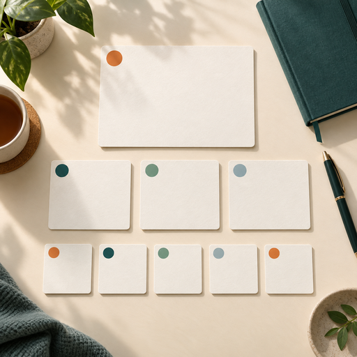

1 big task
Main focus for the day.
The 1-3-5 Rule is a prioritization tool for maximum productivity with minimal wasted time.

Image slotMain focus for the day.
Additional tasks that support the main focus.
Shorter tasks that fit around larger work.
At the beginning of each week, list tasks you want to get done. Make them concrete and actionable.
Categorize each task as big, medium, or small.
A big task takes about 3–4 hours. Medium tasks take about 1–2 hours. Small tasks may take less than 30 minutes to an hour each.
Plot the tasks into a daily or weekly 1-3-5 to-do list.
Select a card to see more.